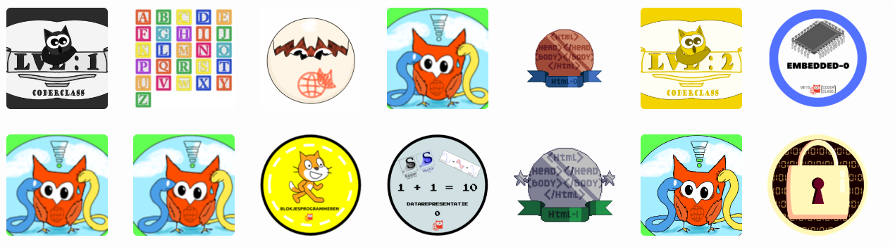

Mijn behaalde Badges
Level 1
Coderclass Omgeving 0
Coderclass level 1 heb ik al een tijd geleden afgerond. De modules waren best makkelijk maar leuk!
Bij coderclassomgeving 0 moesten we een pagina maken op de coderclass wiki. Die heeft een aparte programmeer taal maar die was wel makkelijk te leren.
Op de wiki heeft elke leerling zijn/haar eigen pagina. Op die pagina plaats je dingen zoals hoe je heet, in welke klas je zit, welke badges heb je behaald, etc.
De makkelijkste module van ze allemaal, vind ik.
Python 0
Python 0 Gaat over turtles! Nee, geen schildpadden. Turtles als in tekenen! In deze module maak je code waarbij als je die runt een tekening wordt gemaakt.
Deze module was vrij simpel maar er waren wel een paar uitdagende opdrachten! Je kan met turtle mooie vormen maken door alleen maar wat code te typen!
Je hoeft niet te tekenen en dus je hoeft dus ook niet handig te zijn met handwerk.
HTML CSS 0
HTML CSS 0 Geeft je een eerste indruk voor websites maken! Deze website is ook gemaakt met HTML en CSS! HTML is de hoofdcode, met HTML codeer je dus alle inhoud die je in je website wil.
CSS gebruik je voor de opmaak, het is namelijk belangrijk dat je een mooie website hebt! Maar in specifiek deze module kreeg ik de opdracht om een website te maken die vertelt over een bekende codeur/gamemaker.
Ik heb gekozen voor Jens Bergensten. Dat is een van de 2 makers van Minecraft en is nu ook de leider van de maak van het spel. Wil je zelf de website zien? Dat kan! Klik hiervoor hier!
Blokjesprogrammeren 0
De laatste opdracht van coderclass level 1 is blokjesprogrammeren-0 Daarbij moest ik allerlei soorten puzzels oplossen doormiddel van coderen met blokken. Hoe werkt dat, met blokken?
Simpel! Je hebt blokken voor allerlei functies zoals "Zet 10 stappen naar rechts" en "Draai 90 graden naar rechts" dat soort blokken stapel je op elkaar zoals met lego.
Als je al je blokjes hebt opgestapeld klik je op start en je code word van boven naar beneden uitegvoerd. Best wel cool! Je kan snel coderen zonder echt te coderen. Je hebt alleen wat creativiteit nodig en logica.
Level 2
Python 1a
Python-1a is het eerste deel van Python-1. We moesten daar in allemaal opdrachten maken zoals een rekenmachine of een vraag-antwoord spel.
Blender 0
Blender 0 vond ik de stomste module van allemaal. Het is een 3d animatie programma waar ik maar niet goed mee kan werken. De bedoeling was dat je een aantal animaties maakt.
Een daarvan was een project waarbij je een raket maakt en die laat opstijgen. De finale opdracht was een animatie waar je naam in beeld komt en iets van je hobbies laat zien.
Embedded 0
Embedded 0 is een module waarbij je een microbit gebruikt. Een microbit is een klein computertje die je kan programmeren om bepaalde taken te doen. Je maakt eerst een aantal kleine opdrachten
en uiteindelijk maak je een eindopdracht. De kleine opdrachten houden in dat je bijvoorbeeld een klein hartje maak op de microbit of steen papier schaar ofzo. Bij de eindopdracht had je een aantal keuzes
voor wat je als eindopdracht zou willen maken. Ik koos voor een bibberspiraal spel. Bij coderclass hadden we een bibberspiraal klaar liggen maar er was nog niks geprogrammeerd. Je programmeerde de microbit zo
dat hij een geluidje afspeelde als je het spiraal had geraakt en dat hij een kruis laat zien. Je gebruikt hiervoor de pin functies om data van het spiraal naar de microbit te sturen.
Blokjesprogrammeren 1
Blokjesprogrammeren 1. Dit is het tweede deel van blokjesprogrammeren en dit keer gebruik je scratch waarbij je een project maakt. Ik koos ervoor om een tafeltrainer te maken.
Daarbij krijg je de taak om in 1 minuut zoveel mogelijk tafels te doen. Bijvoorbeeld 4x7 of 3x9. Je hebt de keus om de tafels van 1 t/m 10 te oefenen of een mix te doen waarbij je alle tafels doet.
Ik heb er wel wat tijd ingestoken om te zorgen dat de mix functie goed werkte en niet alleen dezelfde tafels vroeg. Voor elke tafel die je goed hebt krijg je 100 punten. Heb je een tafel fout verlies je 50 punten.
Doe je te lang over een tafel dan kost het je kostbare tijd. Het spel houdt ook bij wat je hoogste aantal punten is geweest en motiveert je om verder te blijven oefenen. Ondanks dat ik de badge al heb wil ik wat verbeteren.
Bijvoorbeeld vind ik de UI nog niet heel mooi en wil ik zorgen dat in plaats van de 'Goed' die in beeld komt voor een seconde dat je een vinkje krijgt en dat je kan zien welke sommen je goed had.
De website is hier
Level 3
Python 1b
Dit is vrijwel hetzelfde als Python 1a maar dan met meer functies die je moet weten. Je maakt weer kleine opdrachtjes en uiteindelijk maak je zelf een klein spelletjeof programma met wat je hebt geleerd.
Ik koos om een kantine simulator te maken! De gebruiker wordt gevraagd of hij/zij een lahmacun of een börek wilt. Als hij/zij gekozen heeft wordt er gevraagt naar allerlei ingrediënten als lahmacun
gekozen is en welke soort börek als die gekozen is. Aan het einde krijgt de gebruiker zijn/haar hele bestelling te horen.
HTML CSS 1
Hier moest ik een website maken waarbij ik vertel over vijf van mijn favoriete videogames (van die tijd). Ik heb hierbij uitleg gegeven over elk spel en een tabel gemaakt met de prijs van elk spel, de naam en de uitgever.
Ik heb er flink wat tijd aan besteed maar ik vond het een leuke opdracht. De website kan je hier vinden!
Datarepresentatie 0
Deze module is een stuk anders dan die hiervoor. Bij deze werd de stof namelijk getoetst i.p.v. dat je een eindopdracht maakt. Je leert over hoe binaire code werkt, morse code en ascii code en je leert ook hoe je binaire code kan
gebruiken. Binaire code is namelijk de code van computers. Het bestaat uit nullen en enen en daarmee kan je dus super complexe computers maken. Uiteindelijk wordt alle stof getoetst.
Security 0
In deze module leer je hacken. Je krijgt namelijk ongeveer 40 opdrachten waarbij je bijvoorbeeld wachtwoorden probeert te kraken of een locatie van een afbeelding moet achterhalen.
er zijn makkelijke opdrachten maar ook erg lastige waar ik zeker een week mee bezig was.
Level 4
Python 2
Python 2 vond ik een erg leuke module. Je kon kiezen uit 3 spelletjes die je moest maken. Voor de rest kreeg je niet veel uitleg. Je kon kiezen uit de spelletjes Wordmind, Galgje en Het Langste Woord. Ik koos voor Wordmind.
Wordmind lijkt erg op dat spelletje bij lingo. Je krijgt een aantal letters en dan voer je letters in en dan zie je welke goed zijn, welke fout en welke op de verkeerde plaats. Je probeert in zo min mogelijk pogingen het woord te raden.
Level 5
Python 3
Python 3 vond ik de leukste python module tot nu toe, in deze opdracht had ik een boodschappenlijst gemaakt. Die werkt vrij simpel. Ik maakte gebruik van Dictionaries, die houden al de producten en de prijzen ervan bewaard voor als ze later worden gebruikt.
In het programma heb je de keuze uit verschillende opties, je kan je producten bekijken, een product toevoegen, een product verwijderen, een product wijzigen (En dan kiezen uit naam of prijs), en boodschappen doen. Bij boodschappen doen krijg je een lijst met je boodschappen en de vraag welke
je wilt kopen. Je krijgt vervolgens de som van deze producten als prijs.
Level 6
Unity 0
Unity 0 vond ik de leukste module, hierbij maakte je een 3d spel waar je als een rollende bal blokjes verzamelt terwijl je over een parkour gaat. Deze module gaf veel vrijheid in het maken van de vormen, kleuren en de speelruimte.
Van de Unity tutorial kregen we de basics te horen. Bijvoorbeeld hoe je vormen maakt, code schrijft, kleuren (Materials) geeft aan objecten etc. Na de tutorial had ik een bal in een doos die alleen kan rollen en die heel simpel 12 blokjes moest pakken, geen uitdaging dus.
Zelf heb ik de speelruimte aangepast naar een uitdagend parkour met 12 blokjes verspreid over het platform. Ik heb gemaakt dat als je van de speelruimte af valt dat je terugkeert naar het begin en je snelheid stil wordt gezet. Ook heb ik de bal de mogelijkheid gegeven om te springen.
Dit spel is dan wel simpel, maar het concept dat ik een 3d spel heb gemaakt vond ik super cool.
